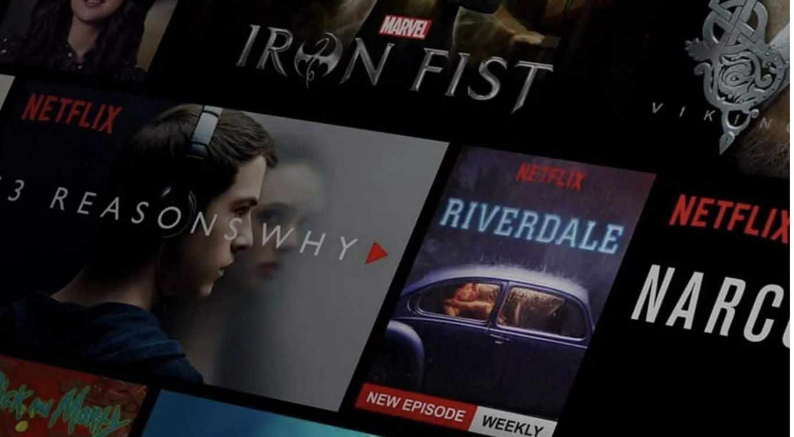
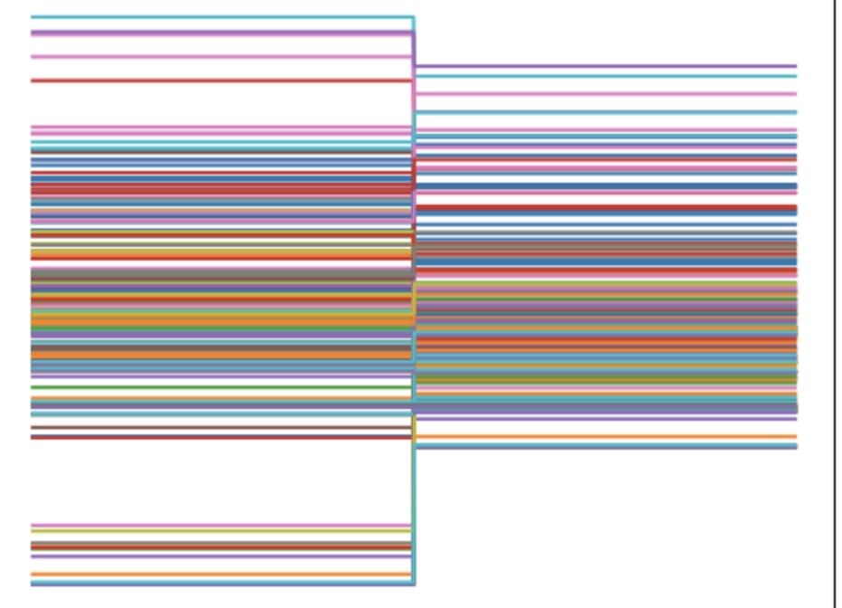

Leveraged Machine Learning algorithms for collaborative and content-based filtering, augmented with Natural Language Processing (NLP) techniques to analyze movie descriptions and user preferences. This holistic approach resulted in a sophisticated recommendation system, enhancing both accuracy and relevance.

In this project, I conducted a thorough analysis of economic indicators like the Wholesale Price Index and Consumer Price Inflation, revealing intricate correlations with stock market movements. By uncovering seasonal trends and assessing volatility's impact, the study provides valuable insights for informed decision-making in financial markets.

"This project features a stable, flexible, and robust implementation, showcased through real-world applications like house price analysis. With capabilities for parallel data sorting and rank-based filtering, our results align with the research paper's findings, affirming the model's efficacy and versatility.